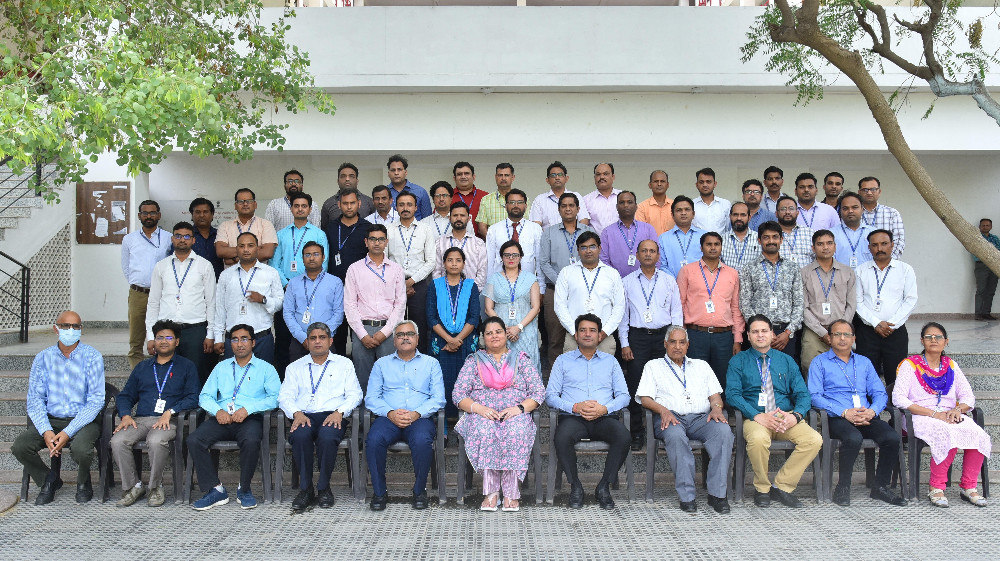

Mechanical Engineering is one of the oldest and broadest fields of engineering, dealing with the design, manufacturing, and maintenance of mechanical systems. It combines principles of physics, mathematics, and material science to develop machines and devices used in various industries.
Mechanical Engineers can work in manufacturing, automotive, aerospace, energy, robotics, and maintenance industries. They can become Design Engineers, Production Engineers, Maintenance Managers, Quality Control Engineers, or Research Scientists.
With advancements in robotics, automation, renewable energy, and smart manufacturing, Mechanical Engineers are playing a vital role in modern industry. The demand for innovative and sustainable mechanical solutions is continuously growing.